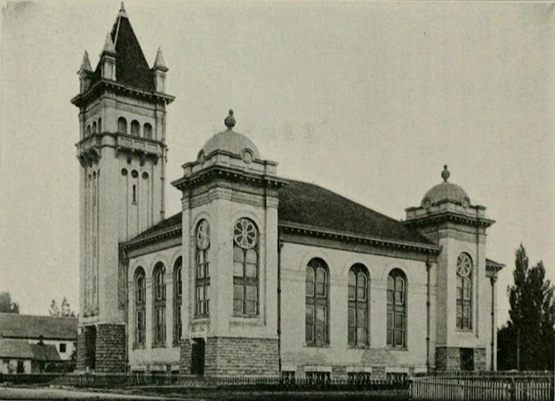

The 1884 Windstorm Disaster
In October 1884, a powerful windstorm struck the Lehi Junction rail yard and destroyed the Salt Lake and Western Railroad engine house. The loss of this structure was devastating because by the mid-1880s, the Junction had already developed beyond a simple rail crossing into a site with dedicated maintenance and operational infrastructure.[61]
Engine houses were vital structures for storing, repairing, and servicing locomotives. The very presence of this dedicated maintenance facility — only a few years after the Tintic line's construction — decisively proved that Lehi Junction was already a busy and logistically critical rail hub.

Religion and Community: The North Branch
Between 1893 and 1894, residents of the Junction organized the North Branch of the LDS Church, reflecting the continued growth of a stable population in the area. By October 1894, a meetinghouse had been constructed at 1190 North 500 West, providing a dedicated space for worship and community gatherings.[62]
The establishment of a formal religious organization and construction of a meetinghouse express that the Junction had developed beyond a temporary rail site into a settled and organized neighborhood. This development demonstrates that Lehi Junction functioned not only as a transportation hub but also as a permanent residential community with its own social and institutional structures.
